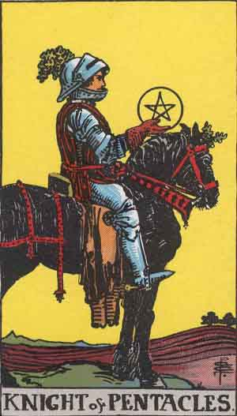

Main | Arcana | Cups | Pentacles | Swords | Wands
Knight of Pentacles

Upright
Harvest, Dedication, Routine, Dependability
- Slow and steady can win the race. Plod onward with patience and reliability.
- Routines bring progress. Practice incrementalism and keep moving forward.
- Systems bring success. Stay true to your vision to see results. Be fiercely loyal and the job gets done.
- Go with your flow, stick to your usual routines and over time you will reach your goals.
- Appreciate what you have and share any excess you don't need.
- Be dedicated to a quality of life where your passions are pursued, your support is to your companions and your focus is on higher things.
Reversed
Bored, Tedium, Apathy
Repetition is dragging you down. You're currently feeling stuck in a routine. Find ways to make tasks fun. Move and flow to keep from being stagnant. Establish a system and stick with it. Do not be overly critical. It may be time to enhance your routine. Add things, trim things, find yourself in the quality of your routines. Do not be reserved in your attempts to improve.